This topic includes information about how to home the disposable tip tray gripper.
Note: Before you home the tip tray gripper, you must first determine whether the gripper is holding one or more trays of tips, and if so, you must remove the trays.
Known Issue (Software Version 1.20)
If you are homing the tip tray gripper assembly as a prerequisite for running the auto-alignment procedure, and if the instrument has software version 1.20 installed, you must first remove the tip trays from all locations except the active tray carrier. Otherwise, the auto-alignment feature might confuse the lower tip tray slots with carriage alignment positions.
All personnel who service the DxI 9000 instrument must use countermeasures to mitigate the risks of pinch, puncture, electrical shock, and exposure to hazardous materials. See
Safety for more information.
Required Supplies
Flashlight
Clean, empty plastic packaging shell that originally contained a stack of four disposable tip trays
Personal protective equipment (PPE)
Feeder Parts and Movement
The tip tray gripper moves trays of disposable pipette tips throughout the tip feeder. The gripper also moves empty tip trays to the tip tray waste basket.
Figure 137: Tip Feeder Parts
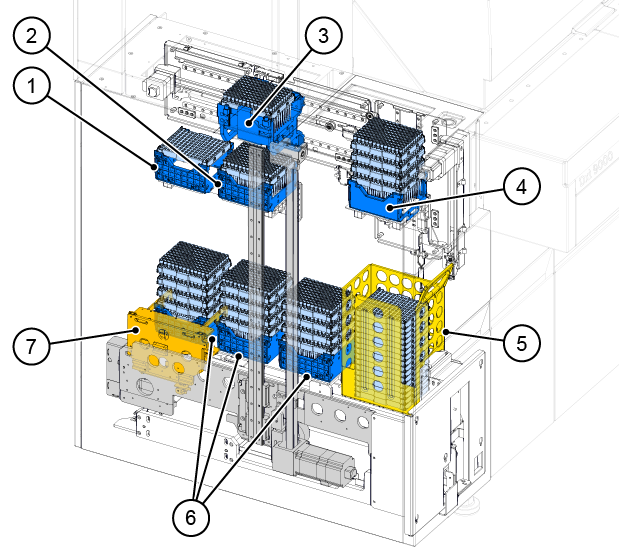
1
Empty tray offload position
2
Full tray ready position
3
Active tray carrier
4
Tip tray loader
5
Tip tray waste basket
6
Tip tray storage positions
7
Tip tray gripper (in its home position)
How the Disposable Tip Tray Gripper Moves within the Feeder
The disposable tip tray gripper moves within the feeder in the following sequence.
During initialization, the disposable tip tray gripper will rest in its home position (7).
Note: After initialization during normal operation, the gripper will assume a resting waiting position located in the middle of the stocker.
The gripper lifts stacks of up to four trays off of the tip tray loader (4) and moves the stack to one of the tip tray storage positions (6) that does not contain trays of tips.
The gripper lifts the top tray of tips from one of the storage positions (6) and moves the tray to the full tray ready position (2).
The gripper lifts the tray of tips from the full tray ready position (2) and moves the tray to the active tray carrier (3) where sample pipettors can remove individual tips.
Note: The active tray carrier moves between the front and back of the analyzer, and the tip tray loader moves up and down. All of the other locations where tip trays are placed do not move.
After the sample pipettors have removed the last tip from the tray in the active tray carrier (3), the gripper lifts and moves the empty tray to the empty tray offload position (1).
The gripper lifts the tray from the empty tray offload position (1) and moves the tray to the tip tray waste basket (5).
Note: The gripper places empty trays on top of one another in the tip tray waste basket, but the gripper never places trays with tips on top of other trays with tips.
Preparing to Home the Gripper
Perform this procedure to prepare the instrument for homing the tip tray gripper.
In the Console App go to
Menu > Tools > Diagnostics > Service Diagnostics to open the Service Diagnostics page.
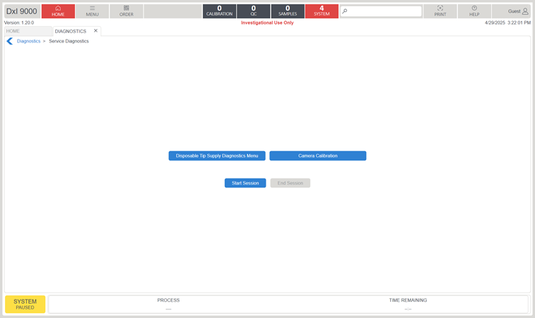
Select
Start Session.
If the instrument enters a
BLUE (Maintenance) status, later in this procedure you can use the Console App to home the tip tray gripper.
If the instrument enters a
RED (Stopped) status, later in this procedure you must use the Machine Control App to home the tip tray gripper.
Perform this procedure to identify the location of the tip tray gripper so that you can prepare to remove trays from the gripper.
Note: You must first prepare the instrument for homing the tip tray gripper. See
Preparing to Home the Gripper for more information.
See
Feeder Parts and Movement for more information about how the tip tray gripper moves trays of disposable pipette tips throughout the tip feeder.
Determine whether the gripper is near the top or bottom of the tip tray feeder.
Open the tip loader access panel.
Open the left cover on the front of the instrument.
Figure 138: Left Cover
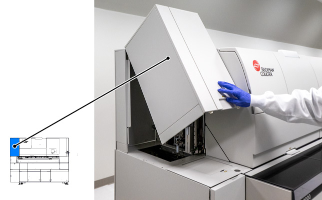
Open the tip feeder cover.
Figure 139: Tip Feeder Cover
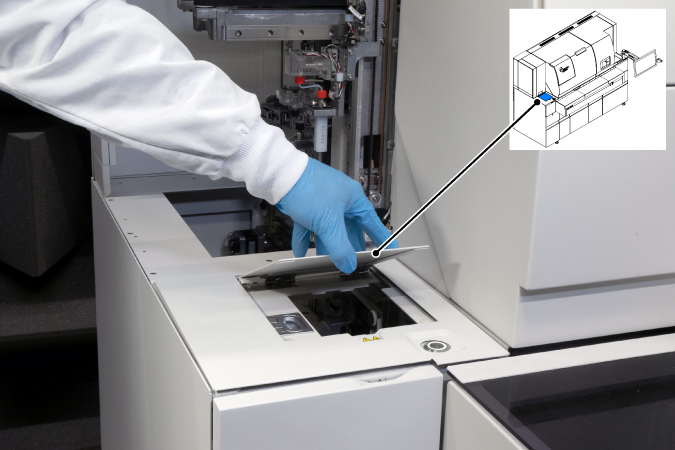
Pull up on the tip loader panel latch and simultaneously allow the tip feeder cover to close on the tip loader access panel.
Figure 140: Opening the Tip Loader Access Panel
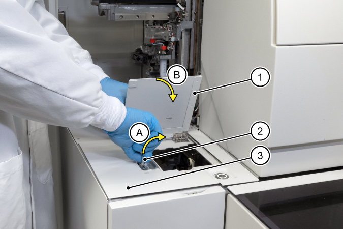
1
Tip feeder cover
2
Tip loader panel latch
3
Tip loader access panel
Push up on the tip loader access panel until it stays open.
Figure 141: Tip Loader Access Panel
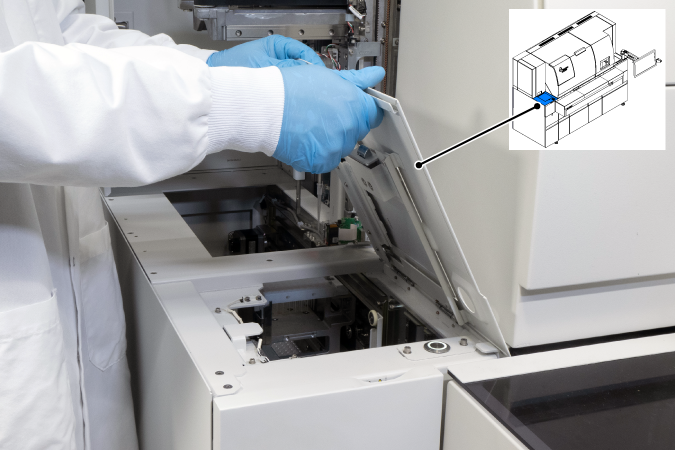
Open the lower right door on the back of the instrument.
Figure 142: Back Lower Right Door
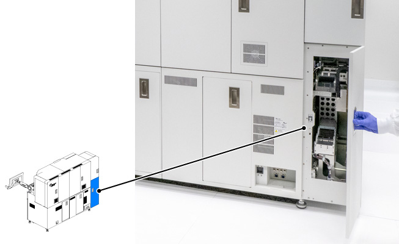
Determine the location of the tip tray gripper inside the tip feeder.
Look through the sample pipettor window and the tip loader access window to find the gripper.
Tip: Use a flashlight while looking through the windows to help identify the location of the gripper.
Figure 143: Tip Feeder Windows
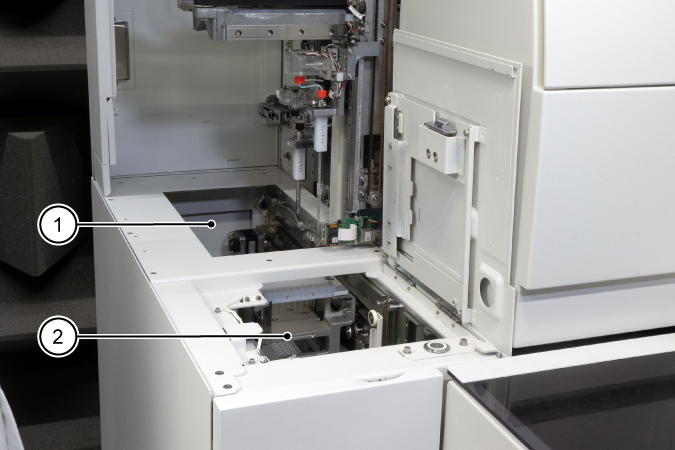
1
Sample pipettor window
2
Tip loader access window
Use the images below as a reference to confirm the position of the gripper in the instrument.
Figure 144: Example: Viewing the Tip Tray Feeder Through the Sample Pipettor Window
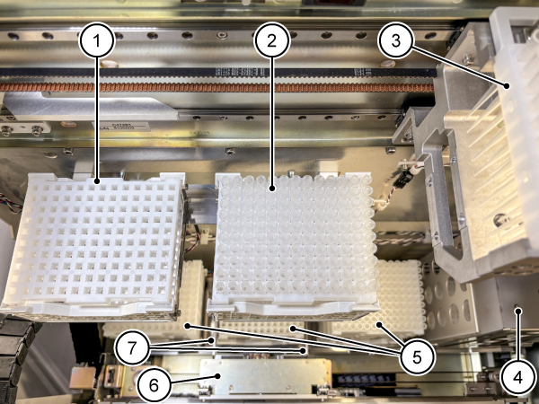
1
Empty tray offload position - top of feeder
2
Full tray ready position - top of feeder
3
Active tray carrier - top of feeder
4
Tip tray waste basket - bottom of feeder
5
Tip tray storage positions - bottom of feeder
6
Tray gripper mounting plate
7
Tray gripper arms
Figure 145: Example: Viewing the Tip Tray Feeder Through the Tip Loader Access Window
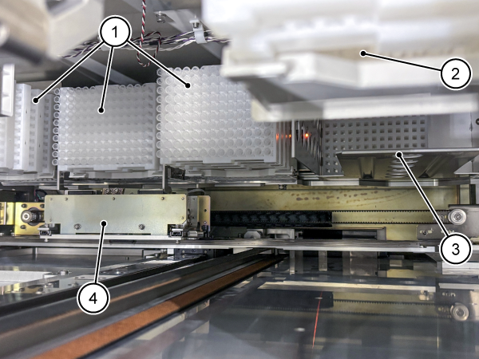
1
Tip tray storage positions - bottom of feeder
2
Tip tray loader - top of feeder
3
Tip tray waste basket - bottom of feeder
4
Tray gripper mounting plate (shown near the middle storage position - bottom of feeder)
Figure 146: Example: Viewing the Tip Tray Feeder Through the Back Lower Right Door
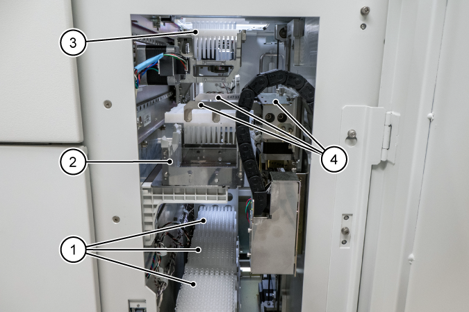
1
Tip tray storage positions - bottom of feeder
2
Empty tray offload position - top of feeder
3
Active tray position - top of feeder
4
Tray gripper mounting plate and tray gripper arms (shown grasping an empty tray lifted from the empty tray offload position - top of feeder)
Determine what action to take next, depending on the location of the tip tray gripper.
Figure 147: Tip Feeder Top
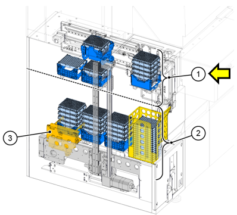
The Gripper Is Near the Top of the Tip Feeder (1): If the tip tray gripper is above the dashed line in the image above (callout 1), you must remove the tip trays from the gripper near the top of the tip feeder. Proceed to the
Removing Trays from the Gripper procedure.
Figure 148: Tip Feeder Bottom
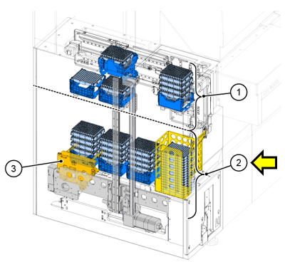
The Gripper Is Near the Bottom of the Tip Feeder (2): If the tip tray gripper is below the dashed line in the image above (callout 2), you must open the tip tray feeder drawer to gain better access to the gripper. Proceed to the
Opening the Tip Tray Feeder Drawer procedure.
Caution: Do not open the tip tray feeder drawer unless you confirmed that the gripper is near a tray position at the bottom of the feeder. If you attempt to open the tip tray feeder drawer when the tip tray gripper is near the top of the tip feeder, you will damage the gripper.
Figure 149: Tip Feeder Home
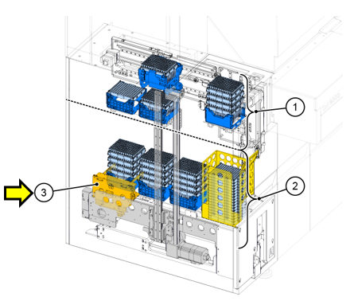
The Gripper Is In Its Home Position (3): If the tip tray gripper arms are straddling the rear-most tip tray storage position at the bottom of the feeder in the image above (callout 3), and the arms are beneath the trays of tips, the tip tray gripper is in its home position.
If the instrument is in a
BLUE (Maintenance) status, use the Console App to home the tip tray gripper. Proceed to the
Using the Console App to Home the Gripper procedure.
If the tip tray gripper is near the bottom of the tip feeder, you must open the tip tray feeder drawer to gain better access to the gripper.
Caution: Do not open the tip tray feeder drawer unless you confirmed that the gripper is near a tray position at the bottom of the feeder. If you attempt to open the tip tray feeder drawer when the tip tray gripper is near the top of the tip feeder, you will damage the gripper.
Open the cover on the disposable tip tray drawer.
Figure 150: Disposable Tip Tray Drawer Cover
Press down on the release tab to release the front lock on the tip feeder drawer.
Figure 151: Front Lock and Handle for the Tip Tray Feeder Drawer
1
Release tab on the front drawer lock
2
Tip feeder drawer handle
3
Tip feeder drawer cover
Open the lower right door on the back of the analyzer.
Figure 152: Back Lower Right Door
Press left on the release tab to release the back lock on the tip feeder drawer. The drawer slides forward slightly when the lock is released.
Caution: Do not open the tip tray feeder drawer unless you have confirmed that the gripper is near a tray position at the bottom of the feeder. If you attempt to open the tip tray feeder drawer when the tip tray gripper is near the top of the tip feeder, you will damage the gripper.
Figure 153: Back Lock for the Tip Tray Feeder Drawer
1
Release tab on the back drawer lock
Use the handle on the front of the drawer to slide the drawer out of the feeder.
Figure 154: Opening the Disposable Tip Feeder Drawer
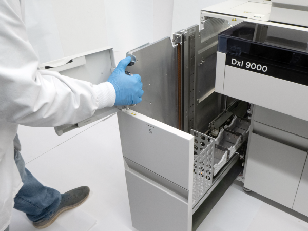
You must now remove the tip trays from the gripper near the bottom of the tip feeder. Proceed to the
Removing Trays from the Gripper procedure.
Removing Trays from the Gripper
Perform this procedure to determine whether the disposable tip tray gripper is holding one or more trays of tips, and if so, remove them, before you open the tray gripper arms or home the gripper.
Caution: If you open the gripper arms while the gripper is holding trays of tips, the trays and tips may fall into the feeder and potentially cause jams and hardware damage.
Note: Before you attempt to remove trays from the gripper, you must first identify the location of the gripper. See
Identifying the Location of the Gripper for more information.
Determine which example below matches your tip tray gripper status and complete the recommended action.
Figure 155: Example 1 - Tip Tray Gripper Near an Empty Storage Position
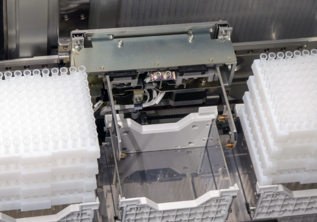
Example 1 - Gripper arms are near a bracket without trays - The gripper is near a tip tray bracket but no trays are present. There are no trays to remove in this example. Skip the remaining steps in this procedure and proceed to opening the tip tray gripper arms.
Figure 156: Example 2 - Tip Tray Gripper Arm Beneath the Bottom Tray
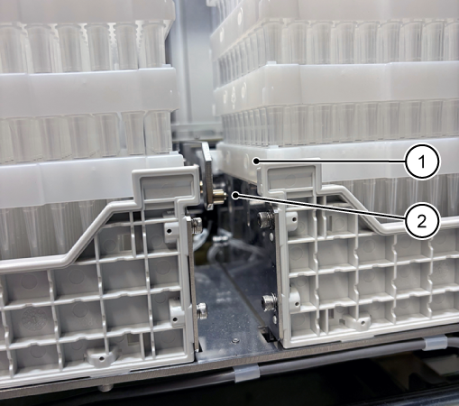
1
Bottom tip tray in a stack of trays
2
Gripper arm and gripper pin disengaged from, and beneath the bottom tip tray
Example 2 - Gripper arms are beneath the tip trays - When viewed from directly above the tip trays, it may appear that the gripper arms are closed and that the pins are engaged with the bottom tip tray. However, when viewed from the side, it is apparent that the gripper arms are not holding a tray; instead, they are simply positioned below the bottom tray in the stack. In this example, the trays are resting securely on a tray bracket and do not need to be removed from the feeder. Skip the remaining steps in this procedure and proceed to opening the tip tray gripper arms.
Figure 157: Example 3 - Tip Tray Gripper Open, Not Holding a Tray
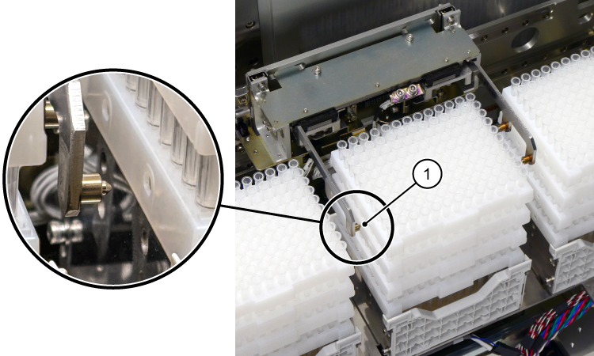
1
Pin on the gripper arm is disengaged from the tip tray
Example 3 - Gripper arms are open, not holding a tip tray - The gripper pins mounted to the gripper arms are disengaged from the tip tray, which indicates that the gripper is not holding the tray. Instead, the tray is resting securely on a feeder bracket and does not need to be removed, and the gripper arms are in their fully opened position. Skip the remaining steps in this procedure and proceed to homing the tip tray gripper.
If the instrument is in a
BLUE (Maintenance) status, use the Console App to home the tip tray gripper. Proceed to the
Using the Console App to Home the Gripper procedure.
Figure 158: Example 4 - Tip Tray Gripper Closed, Holding a Tray
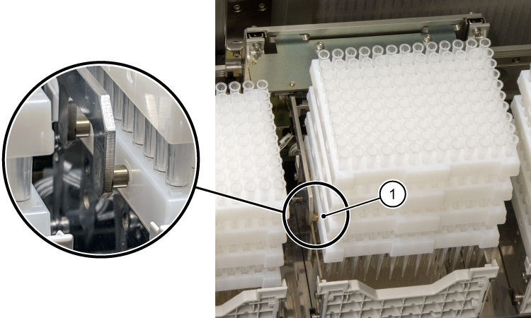
1
Pin on the gripper arm is inserted into the tray hole
Example 4 - Gripper arms are closed, holding a tip tray - The gripper pins mounted to the gripper arms are inserted into the holes on the sides of the tip tray, which indicates that the gripper is holding the tray. This tray, or stack of trays, must be removed from the instrument. Complete the steps in this procedure to remove the trays.
To remove the trays:
If the gripper is holding a stack of two or more trays, remove all of the trays in the stack except the bottom tray.
Caution: Remove trays of tips from the gripper carefully. Tips and trays can cause jams, alignment failures, and analyzer damage if they are spilled inside the instrument and left in the path of hardware parts responsible for moving trays and tips.
Note:
The bottom tray of tips is held by the gripper arms and must be removed separately in the next step.
If the gripper is holding a single tray, skip this step and proceed to the next step.
Recycle or discard empty trays according to the guidelines for your location.
Place trays with tips in an empty packaging shell.
Figure 159: Trays of Tips in a Packaging Shell Bottom
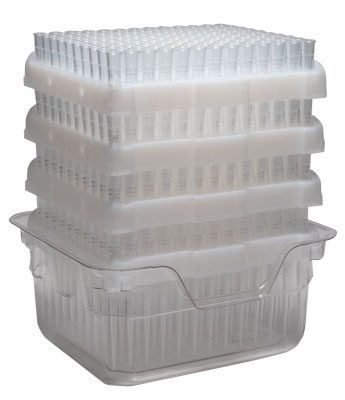
Examine trays of tips placed in the packaging shell and complete the following actions.
If the top tray is empty or if any tips are missing, remove the tray and recycle or discard the tray and tips according to the guidelines for your location.
Save full trays to be reloaded later.
Remove a single tip tray held by the gripper arms, as shown in the example images below.
Figure 160: Example: Removing a Tip Tray Through the Pipettor Window
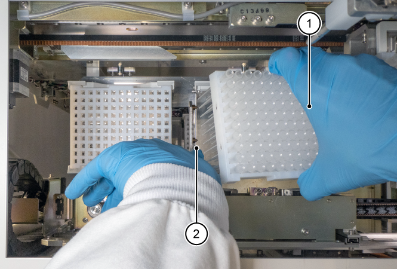
1
Grasp the tray
2
Pull the spring-loaded gripper arm away from the tip tray
Figure 161: Example: Removing a Tip Tray from the Disposable Tip Feeder Drawer
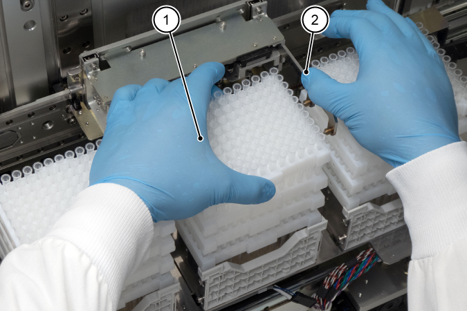
1
Grasp the tray
2
Pull the spring-loaded gripper arm away from the tip tray
Grasp the tip tray with one hand.
Use your other hand to gently pull one of the gripper arms away from the tip tray.
Tilt the tray up on the side from which you pulled the gripper arm away.
Slide the tray away from the gripper arm on the other side and remove the tray from the instrument.
Note: The figure above shows the removal of the top tray of tips from a stack of tip trays. If the gripper has not fully lifted a tray of tips away from the tray beneath it, the tips beneath the tray to be removed may hinder removal of the top tray. It may be necessary to remove the top tray in two steps:
Grasp the tray, pull a gripper arm away from the tray, raise the tray slightly above the opened arm, then slowly release the arm so the pins remain just beneath the holes in the tray.
Grasp the tray, pull the opposite arm away from the tray, and raise and remove the top tray from the remaining trays.
If the tray is empty or missing tips, recycle or discard the tray and tips according to the guidelines for your location.
If there are no tips missing from the tray, place the tray in a tip tray packaging shell to be reloaded later.
Before you home the tip tray gripper, you must open the gripper arms. Perform this procedure to use the Console App to open the gripper arms.
Caution: Do not perform this procedure if the gripper is holding tip trays. If you open the gripper arms while the gripper is holding tip trays, trays and tips will spill into the feeder. Disposable tips and tip trays dropped inside the tip feeder can cause feeder jams and damage to the feeder hardware. However, before you attempt to remove trays from the gripper, you must identify the location of the gripper. See
Identifying the Location of the Gripper and
Removing Trays from the Gripper for more information.
Tip: This procedure is most efficient if another operator is available to select options on the software user interface while you view the arms moving further apart or closer together.
Warning: Options selected at the console monitor during the performance of this procedure will cause hardware parts to move. Do not perform this procedure while another operator has their hands inside the analyzer. Moving parts can expose you to injury.
In the Console App go to
MENU > Tools > Diagnostics > Service Diagnostics to open the Service Diagnostics page.
Select
Start Session.
Go to
Disposable Tip Supply Diagnostics Menu > Tray Gripper Diagnostics to open the Tray Gripper Diagnostics page.
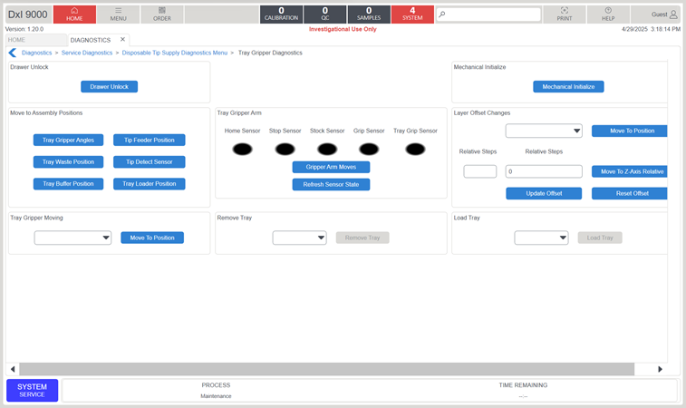
Examine the gripper arms to understand their position relative to each other.
Note: If you previously determined that the gripper is near the top of the feeder, view the gripper arms through the sample pipettor window or the tip loader access window. If you determined that the gripper is near the bottom of the feeder, view the gripper arms in the opened tip feeder drawer.
Select
Gripper Arm Moves.
If the gripper arms were open, the arms will close.
If the gripper arms were closed, the arms will open.
Continue to select
Gripper Arm Moves until you are confident the arms are open.
Close all drawers and covers on or near the disposable tip tray feeder.
Grasp the handle on the tip tray feeder drawer and slowly but firmly slide the drawer back into the instrument until you feel the front lock click into place. Confirm that the lock has engaged by gently pulling on the drawer handle to attempt to open the drawer.
Close the lower right door on the back of the instrument.
Close the cover on the disposable tip tray drawer.
Close the tip loader access panel.
Close the left cover on the front of the instrument.
Note: In the next step you will select commands that will tell the instrument to attempt to move the disposable tip tray gripper to its home position. Listen to the feeder while the instrument attempts the move. If the instrument is unable to detect obstructions in the path of the gripper, and if the gripper makes accidental contact with the obstructions, you may be able to hear the gripper crash into the obstructions, which will determine subsequent troubleshooting steps.
In the Console App go to
MENU > Tools > Diagnostics > Service Diagnostics to open the Service Diagnostics page.
Select
Start Session.
Go to
Disposable Tip Supply Diagnostics Menu > Tray Gripper Diagnostics to open the Tray Gripper Diagnostics page.
Select
Mechanical Initialize. The instrument will attempt to move the gripper to its home position.
If the Success window is displayed with the notification
Request is complete, the instrument successfully homed the tip tray gripper. Perform the following actions.
Using the Machine Control App to Open the Gripper Arms
If the instrument is in a
RED (Stopped) status, use the Machine Control App to open the disposable tip tray gripper arms, to release the gripper brake, and to move the gripper to its home position.
Note: The options you select in the Machine Control App while you complete this procedure will cause hardware parts to move. Do not complete this procedure while another operator has their hands inside the instrument. Moving parts can expose you to injury.
Note: Do not perform this procedure if the gripper is holding tip trays. If you open the gripper arms while the gripper is holding tip trays, the trays and tips will spill into the feeder. Disposable tips and tip trays dropped inside the tip feeder can cause feeder jams and damage to the feeder hardware.
In the Machine Control App go to
Menu > Machine Control > Tray Gripper > TrayGripper.TrayGripperAssembly.
Figure 162:
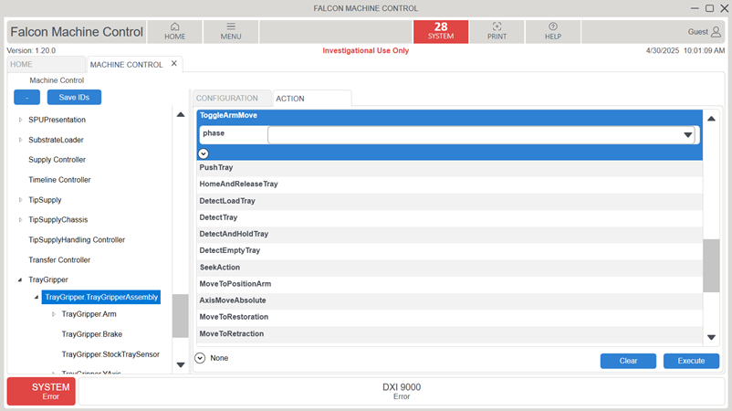
On the Action tab select
ToggleArmMove.
You must be able to view the gripper arms while you continue this procedure.
If you previously determined that the gripper is near the top of the feeder, view the gripper arms through the sample pipettor window or the tip loader access window.
If you determined that the gripper is near the bottom of the feeder, view the gripper arms in the opened tip feeder drawer.
Select
Execute.
If the gripper arms were open, the arms will close.
If the gripper arms were closed, the arms will open.
Continue to select
Execute until you are confident the arms are open.
Go to
Menu > Machine Control > Tray Gripper > TrayGripper.TrayGripperAssembly > TrayGripper.Brake.
Figure 163:
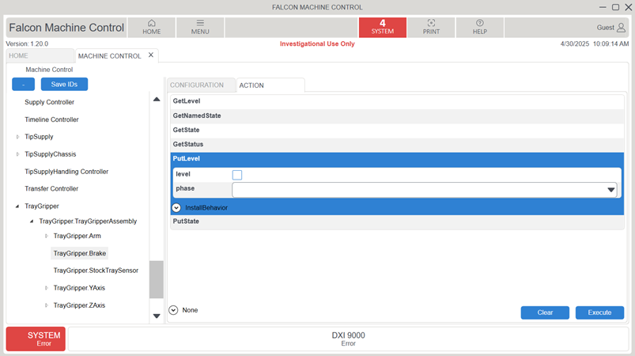
On the Action tab select
PutLevel.
Select
level.
Select
Execute to release the gripper brake.
You may now use Machine Control App commands to move the gripper up and down along its Z-axis or horizontally front to back along its Y-axis. Proceed to the
Using the Machine Control App to Home the Gripper procedure.
Using the Machine Control App to Home the Gripper
Perform this procedure to use the Machine Control App to home the disposable tip tray gripper.
Warning: The options you select in the Machine Control App will cause hardware parts to move. Do not complete this procedure while another operator has their hands inside the instrument. Moving parts can expose you to injury.
Note: Your initial efforts to home the gripper using Machine Control should only be conducted when the gripper arms are straddling tip trays, a bracket that the trays sit on, or the empty tray waste basket. Acceptable tray bracket locations are identified by callouts 1–4 or 6-9 in the image below. If the gripper is in any other location of the feeder, using Machine Control to home the gripper may result in damage to or misalignment of the gripper if it collides with other feeder parts.
Figure 164: Tip Tray Gripper - Parts and Pathways to Home
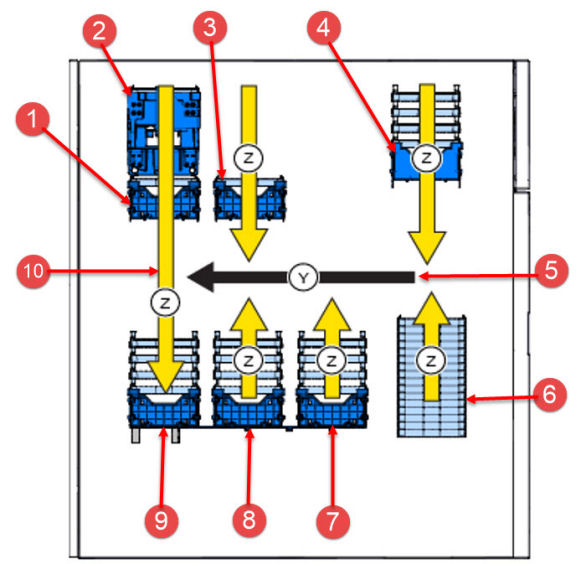
1
Empty tray offload position
2
Active tray carrier
3
Full tray ready position
4
Tip tray loader
5
Main horizontal gripper path (Y-axis)
6
Tip tray waste basket
7
Front tip tray storage position
8
Middle tip tray storage position
9
Rear tip tray storage position
10
Vertical Z-axis aligned above the gripper home position
Before you use the Machine Control App to home the gripper, you must identify the vertical and horizontal paths needed to home the gripper. The tip tray gripper travels along two axes within the feeder, vertically up and down (Z-axis) and horizontally front to back (Y-axis).
Figure 165: Main Horizontal and Vertical Paths
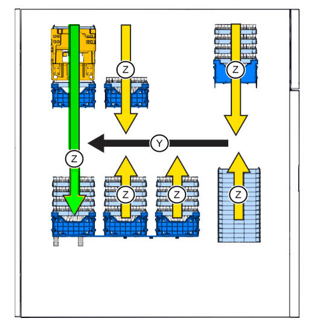
You can use Machine Control to move the gripper in the following ways.
Move the gripper a specified distance vertically on the Z-axis. This movement is typically performed in order to move the gripper to the main horizontal pathway (black arrow in the image below) that separates the top half of the feeder from the bottom half.
Home the gripper on the vertical Z-axis. Automatically moves the gripper into its final destination at the bottom of the rear-most tip tray storage position. This movement should only be performed when the gripper arms are straddling trays or the tray bracket at the active tray carrier position or the empty tray offload position or after successfully homing the gripper on the horizontal, Y-axis.
Move the gripper a specified distance horizontally on the Y-axis. This moves the gripper toward the front or back of the instrument.
Home the gripper on the horizontal Y-axis. Automatically centers the gripper above the rear-most tip tray storage position. This movement should only be performed after first moving the gripper up or down into the main horizontal pathway in the feeder (callout 5 in the image above).
The table below identifies the moves you must use in combination to home the gripper when the gripper is in one of the acceptable starting points.
When the gripper is in this position
Complete these moves in the order listed to home the gripper
Empty tray offload position
Active tray carrier
Home the gripper on the vertical Z-axis
Full tray ready position
Tip tray loader
Move the gripper vertically on the Z-axis down to the main horizontal path (the Y-axis).
Home the gripper on the horizontal Y-axis.
Home the gripper on the vertical Z-axis.
Tip tray waste basket
Front tip tray storage position
Middle tip tray storage position
Move the gripper vertically on the Z-axis up to the main horizontal path (the Y-axis).
Home the gripper on the horizontal Y-axis.
Home the gripper on the vertical Z-axis.
Rear tip tray storage position
Home the gripper on the vertical Z-axis
To move the gripper a specified distance vertically on the Z-axis:
Go to
Menu > Machine Control > TrayGripper > TrayGripper.TrayGripperAssembly > TrayGripper.Z-Axis.
Figure 166:
On the Action tab select
Move Relative.
In the
Steps box type the number of vertical steps to move the tip tray gripper vertically. To move the gripper down, include a minus symbol (-) in front of the numeric value.
Note: You must measure or estimate the distance in centimeters that you want the tip tray gripper to move, and then convert the distance to
vertical steps. A
vertical step is a unit of distance understood by the Machine Control App and the instrument hardware and software. The gripper moves up and down along the vertical Z-axis approximately 1 cm (0.39 in.) for every 148 vertical steps. Until you become comfortable using Machine Control to move the tip tray gripper, you are encouraged to move the gripper in multiple increments of a smaller distance, such as 1 cm, to minimize the chance of damaging the gripper.
Select
Execute.
Tip: You can select
Execute again to move the gripper the same distance you typed into the
Steps box. Selecting
Execute repeatedly to move the gripper in increments of 1 cm will allow you to move the gripper to the desired destination in smaller, safer increments.
To home the gripper on the vertical Z-axis:
Caution: Perform this move only when the tip tray gripper is aligned above the rear tip tray storage position. The gripper is aligned above the rear tip tray storage position when the gripper arms are straddling the tip trays or straddling the tray bracket in the active tray carrier position or in the empty tray offload position. If you complete this procedure when the tip tray gripper is not aligned above the rear tip tray storage position, you will damage or misalign the gripper.
Go to
MENU > Machine Control > TrayGripper > TrayGripper.TrayGripperAssembly > TrayGripper.ZAxis.
Figure 167:
On the Action tab select
Home.
Select
Execute. The gripper will move down to its home position at the bottom of the rear tip tray storage position.
To move the gripper a specified distance horizontally on the Y-axis:
Go to
MENU > Machine Control > TrayGripper > TrayGripper.TrayGripperAssembly > TrayGripper.Y-Axis.
Figure 168:
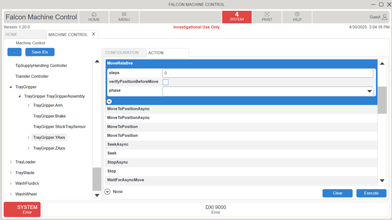
On the Action tab select
Move Relative.
In the
Steps box type the number of horizontal steps to move the tip tray gripper horizontally. To move the gripper toward the back of the instrument, include a minus symbol (-) in front of the numeric value.
Note: You must measure or estimate the distance in centimeters that you want the tip tray gripper to move, and then convert the distance to
horizontal steps. A
horizontal step is a unit of distance understood by the Machine Control App and the instrument hardware and software. The gripper moves up and down along the horizontal (Y) axis approximately 1 cm (0.39 in.) for every 167 horizontal steps. Until you become comfortable using Machine Control to move the tip tray gripper, you are encouraged to move the gripper in multiple increments of a smaller distance, such as 1 cm, to minimize the chance of damaging the gripper.
Select
Execute.
Tip: You can select
Execute again to move the gripper the same distance you typed into the
Steps box. Selecting
Execute repeatedly to move the gripper in increments of 1 cm will allow you to move the gripper to the desired destination in smaller, safer increments.
To home the gripper on the horizontal Y-axis:
Caution: Perform this move only after you have moved the tip tray gripper into its main horizontal Y-axis. If the gripper is not within its main horizontal path, completing this procedure will damage or misalign the gripper.
Go to
MENU > Machine Control > TrayGripper > TrayGripper.TrayGripperAssembly > TrayGripper.YAxis.
Figure 169:
On the Action tab select
Home.
Select
Execute. The gripper will move toward the back of the instrument and stop when it is aligned directly above the rear tip tray storage position.